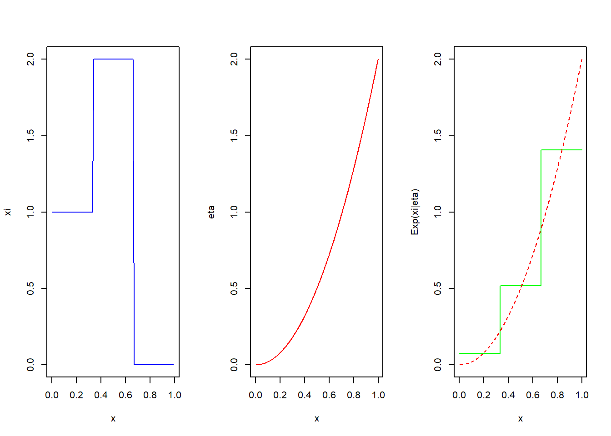

Chapter 4 Conditional Expectation
4.1 Conditioning on an Event
The first and simplest case to consider is that of the conditional expectation \(\mathbf{E} (\xi|B)\) of a random variable \(\xi\) given an event \(B\).
Definition 4.1 For any integrable random variable \(\xi\) and any event \(B \in \mathcal{F}\) such that \(P(B) \neq 0\), the conditional expectation of \(\xi\) given \(B\) is defined by \[ E(\xi \mid B) = \frac{1}{P(B)} \int_B \xi \, dP. \]
Example 4.1 Three coins, 10p, 20p, and 50p are tossed. The values of those coins that land heads up are added to work out the total amount \(\xi\). What is the expected total amount \(\xi\) given that two coins have landed heads up?

Exercise 4.1 Show that \(E(\xi \mid D) = E(\xi)\).
Hint: The definition of \(E(\xi)\) involves an integral and so does the definition of \(E(\xi \mid D)\). How are these integrals related?

Exercise 4.2 Show that if \[ \mathbf{1}_A(\omega) = \begin{cases} 1 & \text{for } \omega \in A \\ 0 & \text{for } \omega \notin A \end{cases} \] (the indicator function of \(A\)), then \[ E(\mathbf{1}_A \mid B) = P(A \mid B), \] where \[ P(A \mid B) = \frac{P(A \cap B)}{P(B)} \] is the conditional probability of \(A\) given \(B\).
Hint: Write \(\int_B \mathbf{1}_A \, dP\) as \(P(A \cap B)\).

4.2 Conditioning on a Discrete Random Variable
The next step towards the general definition of conditional expectation involves conditioning by a discrete random variable \(\eta\) with possible values \(y_1, y_2, \ldots\) such that \(P\{\eta = y_n\} \neq 0\) for each \(n\). Finding out the value of \(\eta\) amounts to finding out which of the events \(\{\eta = y_n\}\) has occurred or not. Conditioning by \(\eta\) should therefore be the same as conditioning by the events \(\{\eta = y_n\}\). Because we do not know in advance which of these events will occur, we need to consider all possibilities, involving a sequence of conditional expectations \[ E(\xi \mid \{\eta = y_1\}), E(\xi \mid \{\eta = y_2\}), \ldots \] A convenient way of doing this is to construct a new discrete random variable constant and equal to \(E(\xi \mid \{\eta = y_n\})\) on each of the sets \(\{\eta = y_n\}\). This leads us to the next definition.
Definition 4.2 Let \(\xi\) be an integrable random variable and let \(\eta\) be a discrete random variable as above. Then the conditional expectation of \(\xi\) given \(\eta\) is defined to be a random variable \(E(\xi \mid \eta)\) such that \[ E(\xi \mid \eta)(\omega) = E(\xi \mid \{\eta = y_n\}) \text{ if } \eta(\omega) = y_n \] for any \(n = 1, 2, \ldots\).
Example 4.2 Three coins, 10p, 20p, and 50p are tossed as in Example 4.1. What is the conditional expectation \(E(\xi \mid \eta)\) of the total amount \(\xi\) shown by the three coins given the total amount \(\eta\) shown by the 10p and 20p coins only?


Example 4.3 Take \(\Omega = [0, 1]\) with the \(\sigma\)-field of Borel sets and \(P\) the Lebesgue measure on \((0, 1]\). We shall find \(E(\xi \mid \eta)\) for \[ \xi(x)=2x^2,~~~ \eta(x) = \begin{cases} 1 & \text{if } x \in [0, \frac{1}{3}], \\ 2 & \text{if } x \in (\frac{1}{3}, \frac{2}{3}), \\ 0 & \text{if } x \in (\frac{2}{3}, 1]. \end{cases} \]


The graph of \(E(\xi|\eta)\) is shown in following figure together with those of \(\xi\) and \(\eta\)

Exercise 4.3 Show that if \(\eta\) is a constant function, then \(E(\xi \mid \eta)\) is constant and equal to \(E(\xi)\).
Hint: The event \(\{\eta = c\}\) must be \(\emptyset\) or \(\Omega\) for any \(c \in \mathbb{R}\).

Exercise 4.4 Show that \[ E(\mathbf{1}_A \mid B)(\omega) = \begin{cases} P(A \mid B) & \text{if } \omega \in B, \\ P(A \mid \Omega\setminus B) & \text{if } \omega \notin B \end{cases} \] for any \(B\) such that \(0 < P(B) < 1\)
Hint How many different values does \(1_B\) take? What are the sets on which these values are taken?

Exercise 4.5 Assuming that \(\eta\) is a discrete random variable, show that \[ E(E(\xi \mid \eta)) = E(\xi). \]
Hint: Observe that \[ \int_B E(\xi \mid \eta) \, dP = \int_B \xi \, dP \] for any event \(B\) on which \(\eta\) is constant. The desired equality can be obtained by covering \(\Omega\) by countably many disjoint events of this kind.
Proposition 4.1 If \(\xi\) is an integrable random variable and \(\eta\) is a discrete random variable, then:
- \(E(\xi \mid \eta)\) is \(\sigma(\eta)\)-measurable;
- For any \(A \in \sigma(\eta)\), \[ \int_A E(\xi \mid \eta) \, dP = \int_A \xi \, dP. \]
Proof. Suppose that \(\eta\) has pairwise distinct values \(y_1, y_2, \ldots\). Then the events \[ \{\eta = y_1\}, \{\eta = y_2\}, \ldots \] are pairwise disjoint and cover \(\Omega\). The \(\sigma\)-field \(\sigma(\eta)\) is generated by these events; in fact, every \(A \in \sigma(\eta)\) is a countable union of sets of the form \(\{\eta = y_n\}\). Because \(E(\xi \mid \eta)\) is constant on each of these sets, it must be \(\sigma(\eta)\)-measurable.
For each \(n\), we have \[ \int_{\{\eta = y_n\}} E(\xi \mid \eta) \, dP = \int_{\{\eta = y_n\}} E(\xi \mid \{\eta = y_n\}) \, dP = \int_{\{\eta = y_n\}} \xi \, dP. \]
Since each \(A \in \sigma(\eta)\) is a countable union of sets of the form \(\{\eta = y_n\}\), which are pairwise disjoint, it follows that \[ \int_A E(\xi \mid \eta) \, dP = \int_A \xi \, dP, \] as required.
4.3 Conditioning on an Arbitrary Random Variable
Definition 4.3 Let \(\xi\) be an integrable random variable and let \(\eta\) be an arbitrary random variable. Then the conditional expectation of \(\xi\) given \(\eta\) is defined to be a random variable \(E(\xi \mid \eta)\) such that:
- \(E(\xi \mid \eta)\) is \(\sigma(\eta)\)-measurable;
- For any \(A \in \sigma(\eta)\), \[ \int_A E(\xi \mid \eta) \, dP = \int_A \xi \, dP. \]
Remark. We can also define the conditional probability of an event \(A \in \mathcal{F}\) given () by \[P(A|\eta)=E(1_A|\eta)\] here \(l_A\) is the indicator function of A.
Do the conditions of Definition 2.3 characterize \(E (\xi|\eta)\) uniquely? The lemma below implies that E \(E (\xi|\eta)\) is defined to within equality on a set of full measure. Namely, if \[\xi=\xi' \text{ almost sure , then } E (\xi|\eta) = E (\xi'|\eta) \text{ almost sure}\] An event \(A\) is said to occur almost surely (a.s.) whenever \(P(A) = 1\). The existence of \(E (\xi|\eta)\) will be discussed later in this chapter.
Lemma 4.1 Let \((\Omega, \mathcal{F}, P)\) be a probability space and let \(\mathcal{G}\) be a \(\sigma\)-field contained in \(\mathcal{F}\). If \(\xi\) is a \(\mathcal{G}\)-measurable random variable and for any \(B \in \mathcal{G}\), \[ \int_B \xi \, dP = 0, \] then \(\xi = 0\) a.s.